# Import data
survey <- read.csv("https://ajohns24.github.io/data/112/about_us_2024.csv")
# How many students have now filled out the survey?
nrow(survey)[1] 28[1] 4Warm-up (together)
Exercises (in groups)
For more information about the topics covered in this chapter, refer to the resources below:
General
Activity Specific
Help each other with the following:
_quarto.yml file. Then click the </> Code link at the top right corner of this page and copy the code into the created Quarto document. This is where you’ll take notes. Remember that the portfolio is yours, so take notes in whatever way is best for you.geom the plot uses.geom you’re using.ggplot() code. Don’t spend more than a few minutes trying these out. If you don’t get it, no problem! You can move on and learn the code in the next exercise.Let’s review some univariate concepts and code using our class survey data. If the answers aren’t at the top of your mind, don’t fret! We’ve barely started speaking this new language, and learned a ton of vocab last week, so you naturally won’t remember it all.
# Import data
survey <- read.csv("https://ajohns24.github.io/data/112/about_us_2024.csv")
# How many students have now filled out the survey?
nrow(survey)[1] 28[1] 4Students were asked, in that moment, where they’d most like to spend time outside. How did they answer? Was there a lot of agreement or a lot of variability in answers? Build and interpret a plot that helps address these questions while reviewing:
cafe_mac minutes_to_campus fave_temp hangout
1 Cheesecake 15 18 the mountains
2 Cheese pizza 10 24 a beach
3 udon noodles 4 18 the mountains
4 egg rolls 7 10 a beach
5 Tacos 5 18 the mountains
6 pasta 35 7 the mountains# Attach a package needed to use the ggplot function
library(ggplot2)
# Make a ggplot
ggplot(survey, aes(x = hangout, fill = hangout)) +
geom_bar()
Students were asked about their ideal outdoor temperature, in degrees Celsius. How did they answer? What was the typical response? What was the range in responses? Were there any outliers? Build and interpret 2 plots that help address these questions.


Bar charts & histograms can appear pretty similar, but they do different things.
Thus far, we’ve been studying one variable at a time, using univariate plots. But once we get a sense of how individual variables behave on their own, our questions often turn to relationships among variables. For example, in our hikes data:
time does it take to complete a hike? ——> How is time related to a hike’s elevation? What about its length?rating vary from hike to hike? ——-> How is difficulty rating related to a hike’s ascent?Exploring univariate patterns often sparks follow-up questions about relationships between 2+ variables. Often, but not always, variables take on specific roles:
time to complete a hike)elevation or length)Visualizations can help explore:
For each pair of variables below, sketch on paper a visualization of their relationship. Focus on general viz process, don’t worry about the exact details. The data here are totally made up.
temp_3pm temp_9am
1 24 14
2 26 18
3 20 15
4 15 13
5 15 11
6 15 11weather <- data.frame(temp_3pm = c(24, 26, 20, 15, 15, 0, 40, 60, 57, 44, 51, 75),
location = rep(c("A", "B"), each = 6))
weather temp_3pm location
1 24 A
2 26 A
3 20 A
4 15 A
5 15 A
6 0 A
7 40 B
8 60 B
9 57 B
10 44 B
11 51 B
12 75 BThink: How might we modify the below density plot of temp_3pm to distinguish between locations?
rain_today (the response) and location (the predictor)weather <- data.frame(rain_today = c("no", "no", "no", "no", "yes", "no", "yes", "no", "yes", "yes", "no", "yes"),
location = c(rep("A", 7), rep("B", 5)))
weather rain_today location
1 no A
2 no A
3 no A
4 no A
5 yes A
6 no A
7 yes A
8 no B
9 yes B
10 yes B
11 no B
12 yes BThink: How might we modify the below bar plot of location to distinguish between days on which it did or didn’t rain?
As with univariate plots, an appropriate visualization for the relationship between 2 variables depends upon whether the variables are quantitative or categorical. In general:
Github user Tony McGovern has compiled and made available 2020/2016/2012 presidential election results for most of 3000+ U.S. counties, except Alaska. (Image: Wikimedia Commons)

A wrangled version of this data, is imported below, after being combined with:
df_county_demographics data set from the choroplethr R package# Load data
elections <- read.csv("https://mac-stat.github.io/data/election_2020_county.csv")
# Check it out
head(elections) state_name state_abbr historical county_name county_fips total_votes_20
1 Alabama AL red Autauga County 1001 27770
2 Alabama AL red Baldwin County 1003 109679
3 Alabama AL red Barbour County 1005 10518
4 Alabama AL red Bibb County 1007 9595
5 Alabama AL red Blount County 1009 27588
6 Alabama AL red Bullock County 1011 4613
repub_pct_20 dem_pct_20 winner_20 total_votes_16 repub_pct_16 dem_pct_16
1 71.44 27.02 repub 24661 73.44 23.96
2 76.17 22.41 repub 94090 77.35 19.57
3 53.45 45.79 repub 10390 52.27 46.66
4 78.43 20.70 repub 8748 76.97 21.42
5 89.57 9.57 repub 25384 89.85 8.47
6 24.84 74.70 dem 4701 24.23 75.09
winner_16 total_votes_12 repub_pct_12 dem_pct_12 winner_12 total_population
1 repub 23909 72.63 26.58 repub 54907
2 repub 84988 77.39 21.57 repub 187114
3 repub 11459 48.34 51.25 dem 27321
4 repub 8391 73.07 26.22 repub 22754
5 repub 23980 86.49 12.35 repub 57623
6 dem 5318 23.51 76.31 dem 10746
percent_white percent_black percent_asian percent_hispanic per_capita_income
1 76 18 1 2 24571
2 83 9 1 4 26766
3 46 46 0 5 16829
4 75 22 0 2 17427
5 88 1 0 8 20730
6 22 71 0 6 18628
median_rent median_age
1 668 37.5
2 693 41.5
3 382 38.3
4 351 39.4
5 403 39.6
6 276 39.6We’ll use this data to explore voting outcomes within the U.S.’s 2-party system. Here’s a list of candidates by year:
| year | Republican candidate | Democratic candidate |
|---|---|---|
| 2020 | Donald Trump | Joe Biden |
| 2016 | Donald Trump | Hillary Clinton |
| 2012 | Mitt Romney | Barack Obama |
How many, or roughly what percent, of the 3000+ counties did the Republican candidate win in 2020?
winner variable.The repub_pct_20 variable provides more detail about the Republican support in each county. Construct a plot of repub_pct_20.
Notice that the distribution of Republican support from county to county is slightly left skewed or negatively skewed.
What follow-up questions do you have?
Don’t spend more than 3 minutes on this!
Below is a scatterplot of the Republican support in 2020 vs 2016. Notice that:
repub_pct_20 might be predicted by repub_pct_16, not vice versaTry to replicate this using ggplot(). THINK:
geom_???) might add these dots / points for each county? We haven’t learned this yet, just take some guesses.
Run each chunk below to build up a a scatterplot of repub_pct_20 vs repub_pct_16 with different glyphs representing each county. Address or think about any prompts in the comments (#).
Summarize the relationship between the Republican support in 2020 and 2016. Be sure to comment on:
The trend of the relationship between repub_pct_20 and repub_pct_16 is clearly positive and (mostly) linear. We can highlight this trend by adding a model “smooth” to the plot:
Construct a new plot that contains the model smooth but does not include the individual point glyphs.
By default, geom_smooth() adds a smooth, localized model line. To examine the “best” linear model, we can specify method = "lm". It’s pretty similar in this example!
To examine how the 2020 results are related to some county demographics, construct scatterplots of repub_pct_20 vs median_rent, and repub_pct_20 vs median_age. Summarize the relationship between these two variables and comment on which is the better predictor of repub_pct_20, median_rent or median_age.
Next, let’s explore the relationship between a county’s 2020 Republican support repub_pct_20 and the historical political trends in its state. In this case repub_pct_20 is quantitative, but historical is categorical. Explain why a scatterplot might not be an effective visualization for exploring this relationship. (What questions does / doesn’t it help answer?)
Though the above scatterplot did group the counties by historical category, it’s nearly impossible to pick out meaningful patterns in 2020 Republican support in each category. Let’s try adding 2 different geom layers to the frame:
Box plots are constructed from five numbers - the minimum, 25th percentile, median, 75th percentile, and maximum value of a quantitative variable:

REFLECT:
Summarize what you’ve learned about the 2020 Republican county-level support within and between red/purple/blue states.
Don’t spend more than 3 minutes on this!
We can also visualize the relationship between repub_pct_20 and historical using our familiar density plots. In the plot below, notice that we simply created a separate density plot for each historical category. (The plot itself is “bad” but we’ll fix it below.) Try to adjust the code chunk below, which starts with a density plot of repub_pct_20 alone, to re-create this image.

Work through the chunks below and address the comments therein.
We’ve now learned 3 (of many) ways to visualize the relationship between a quantitative and categorical variable: side-by-side violins, boxplots, and density plots.
Finally, let’s simply explore who won each county in 2020 (winner_20) and how this breaks down by historical voting trends in the state. That is, let’s explore the relationship between 2 categorical variables! Following the same themes as above, we can utilize grouping features such as fill/color or facets to distinguish between different categories of winner_20 and historical.
Spend at most 5 minutes on the following intuition check. Adjust the code below to recreate the following two plots.

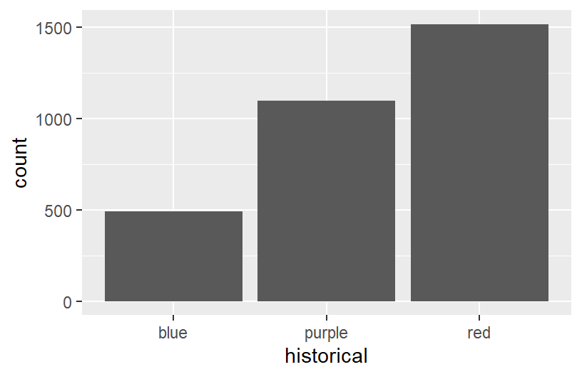
Construct the following 4 bar plot visualizations.
Name one pro and one con of using the “proportional bar plot” instead of one of the other three options.
What’s your favorite bar plot from part and why?
Decide what’s best for you:
Import some daily weather data from a few locations in Australia:
Construct plots that address the research questions in each chunk. You might make multiple plots–there are many ways to do things!. However, don’t just throw spaghetti at the wall.
Reflect before doing anything. What types of variables are these? How might you plot just 1 of the variables, and then tweak the plot to incorporate the other?
The above visualizations are foundational and important. But they’re not the only way to visualize the variables in our dataset.
Suppose we wanted to better understand how the 2020 Republican support varied from county to county within each state. Since repub_pct_20 is quantitative and state_abbr is categorical, we could make a density plot of repub_pct_20 for each state. Reflect on why this is bad.
A facet wrap would also be bad!
When we want to compare the distribution of some quantitative outcome among many groups / categories, a ridgeline plot can be a good option. These are also called joy plots, named after the album cover for “Unknown Pleasures” by Joy Division. (Look it up!) To make a ridgeline plot, we can use the geom_density_ridges() function from the ggridges package.
Follow-up questions
Let’s import some new data and counts up the total votes (Republican and Democratic) by state, not county. This was wrangled from the elections data!
For example, we might make a scatterplot of the 2020 vs 2016 outcomes:
BUT this isn’t the easiest way to communicate or identify the changes from 1 year to the next.
# Check it out
ggplot(elections_by_state, aes(x = repub_pct_20, y = state_abbr)) +
geom_point(color = "red")
# Check it out
ggplot(elections_by_state, aes(x = repub_pct_20, y = fct_reorder(state_abbr, repub_pct_20))) +
geom_point(color = "red")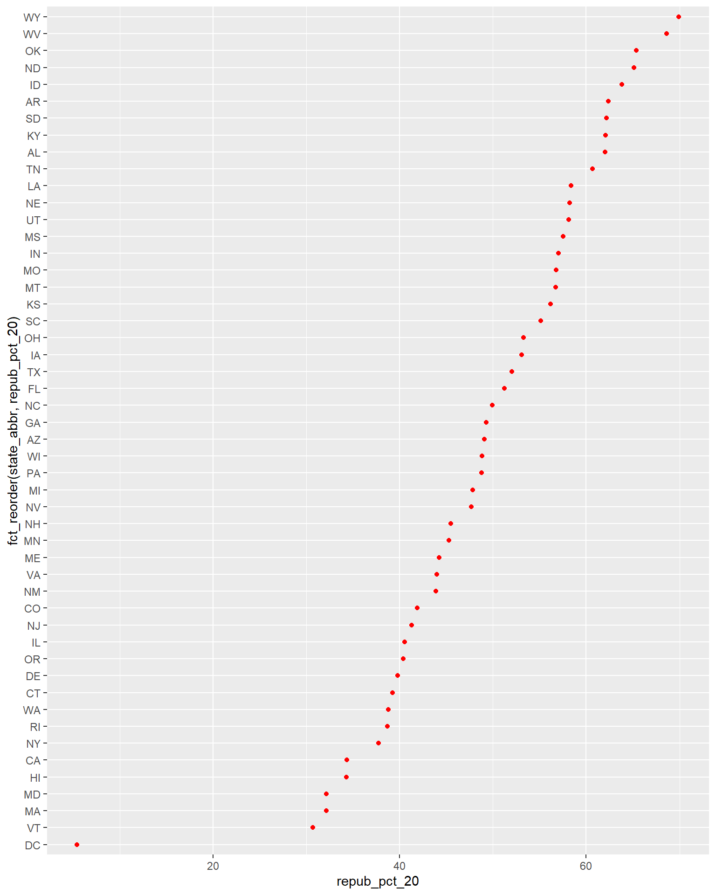
# Finally, add ANOTHER layer of points for the 2016 outcomes
# What info does this new geom_point() layer need to run?
ggplot(elections_by_state, aes(x = repub_pct_20, y = fct_reorder(state_abbr, repub_pct_20))) +
geom_point(color = "red") +
geom_point(aes(x = repub_pct_16, y = state_abbr))
Reflect on the following
# Import data
survey <- read.csv("https://ajohns24.github.io/data/112/about_us_2024.csv")
# How many students have now filled out the survey?
nrow(survey)[1] 28'data.frame': 28 obs. of 4 variables:
$ cafe_mac : chr "Cheesecake" "Cheese pizza" "udon noodles" "egg rolls" ...
$ minutes_to_campus: int 15 10 4 7 5 35 5 15 7 20 ...
$ fave_temp : num 18 24 18 10 18 7 75 24 13 16 ...
$ hangout : chr "the mountains" "a beach" "the mountains" "a beach" ...EXAMPLE 1: Hangout preferences
# Attach a package needed to use the ggplot function
library(tidyverse)
# Make a ggplot
ggplot(survey, aes(x = hangout)) +
geom_bar()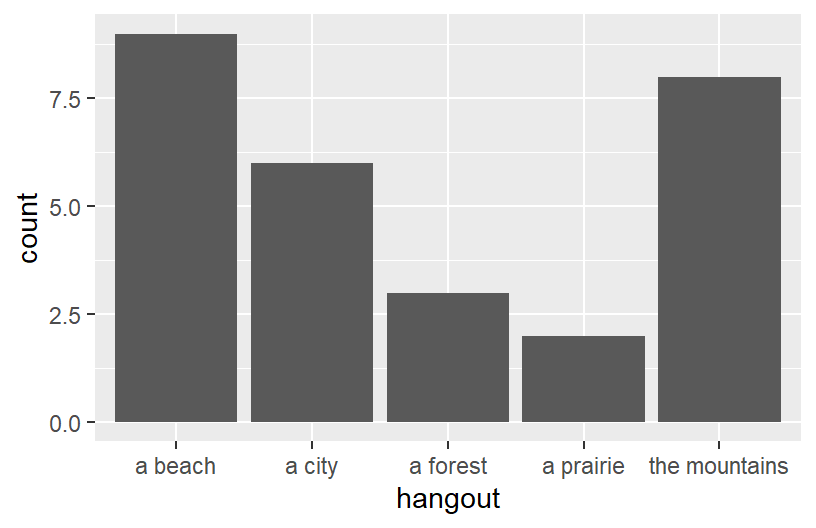
EXAMPLE 2: Temperature preferences
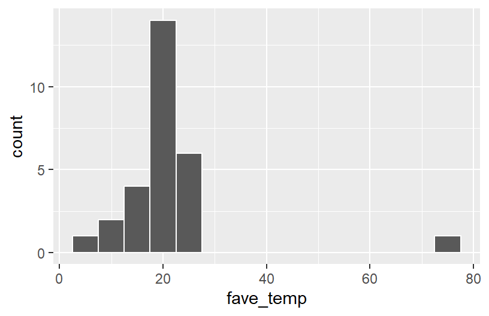
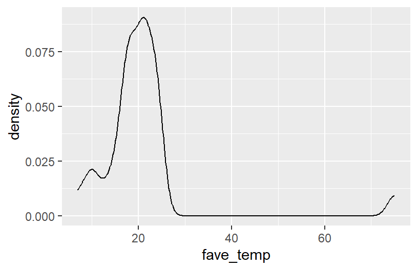
See next exercise.
# Set up the plotting frame
# How does this differ than the frame for our histogram of repub_pct_20 alone?
# ANSWER: we added a y-axis variable
ggplot(elections, aes(y = repub_pct_20, x = repub_pct_16))
# Add a layer of points for each county
# Take note of the geom: geom_point
ggplot(elections, aes(y = repub_pct_20, x = repub_pct_16)) +
geom_point()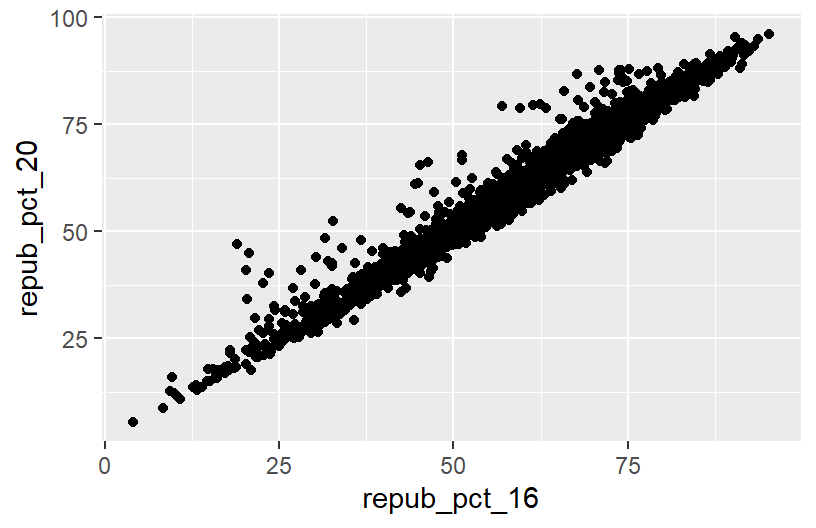
# Change the shape of the points
# What happens if you change the shape to another number?
ggplot(elections, aes(y = repub_pct_20, x = repub_pct_16)) +
geom_point(shape = 3)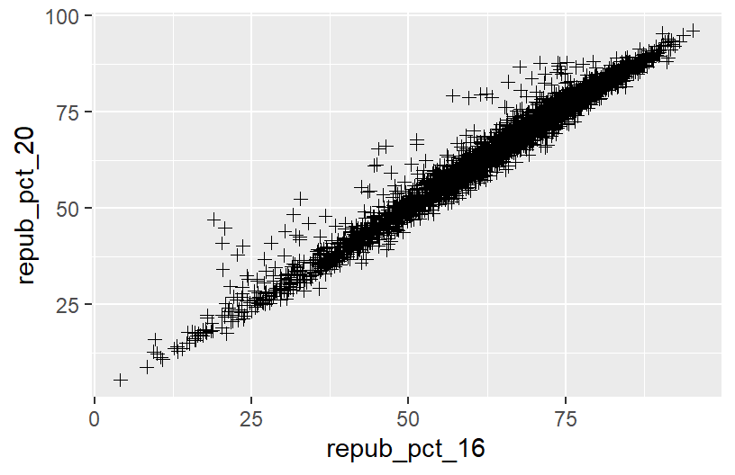
# YOU TRY: Modify the code to make the points "orange"
# NOTE: Try to anticipate if "color" or "fill" will be useful here. Then try both.
ggplot(elections, aes(y = repub_pct_20, x = repub_pct_16)) +
geom_point(color = "orange")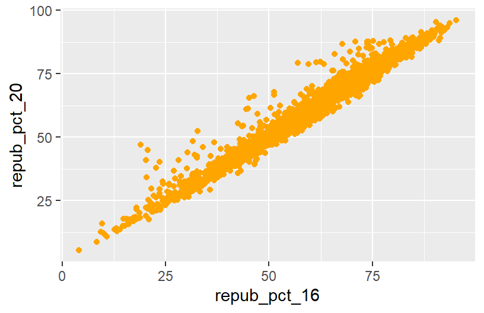
# Add a layer that represents each county by the state it's in
# Take note of the geom and the info it needs to run!
ggplot(elections, aes(y = repub_pct_20, x = repub_pct_16)) +
geom_text(aes(label = state_abbr))
There’s a strong, positive association – the higher the Republican support in 2016, the higher it was in 2020. There are some counties in Texas and Utah where the R support in 2020 was disproportionately higher than in 2016.
There’s a moderate, positive association between R support and median age – the older the average age in a county, the higher the R support tends to be. However, there’s a stronger, negative association between R support and median rent – the higher the rent (a proxy for cost of living), the lower the R support tends to be.
See next exercise.
# Side-by-side violin plots
ggplot(elections, aes(y = repub_pct_20, x = historical)) +
geom_violin()
# Side-by-side boxplots (defined below)
ggplot(elections, aes(y = repub_pct_20, x = historical)) +
geom_boxplot()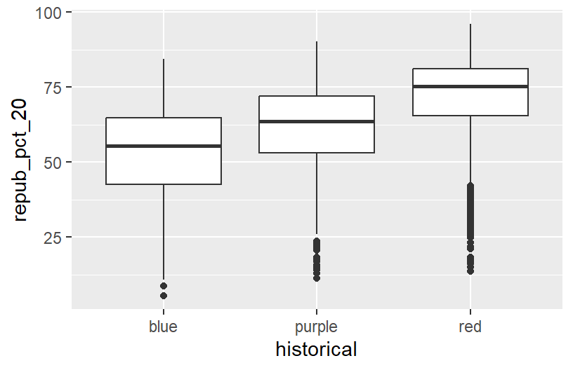
REFLECT:
There’s quite a bit of range in county-level R support within blue, purple, and red states. However, R support tends to be higher in red states and lower in blue states.
See next exercise.
# The colors used don't match up with the blue, purple, red labels
# The density plots are on top of each other
ggplot(elections, aes(x = repub_pct_20, fill = historical)) +
geom_density()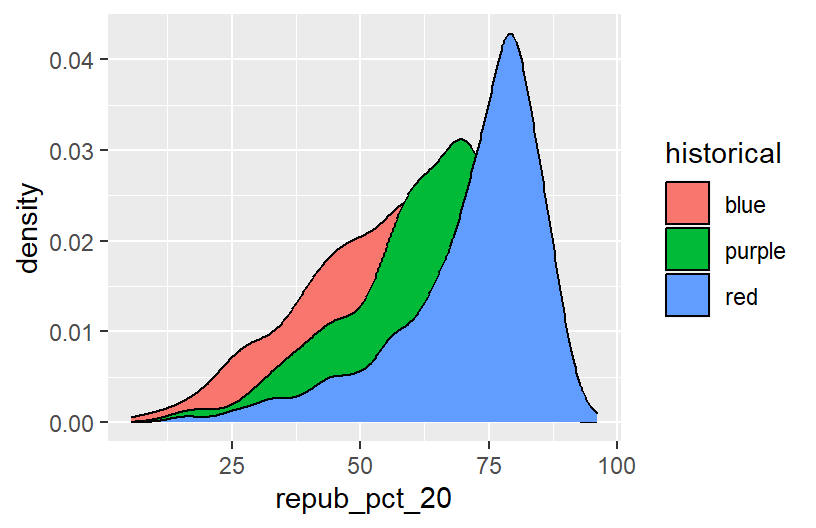
# scale_fill_manual "hard codes" or defines what colors to use for the fill categories
ggplot(elections, aes(x = repub_pct_20, fill = historical)) +
geom_density() +
scale_fill_manual(values = c("blue", "purple", "red"))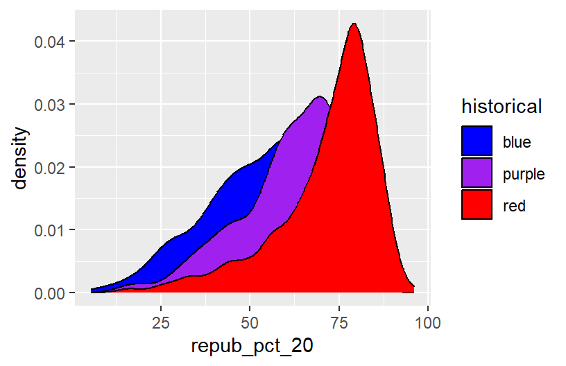
# alpha = 0.5 adds transparency
# the closer alpha is to 0, the more transparent.
# the closer alpha is to 1, the more opaque.
ggplot(elections, aes(x = repub_pct_20, fill = historical)) +
geom_density(alpha = 0.5) +
scale_fill_manual(values = c("blue", "purple", "red"))
# facet_wrap separates the density plots into "facets" for each historical group
ggplot(elections, aes(x = repub_pct_20, fill = historical)) +
geom_density() +
scale_fill_manual(values = c("blue", "purple", "red")) +
facet_wrap(~ historical)
# Let's try a similar grouping strategy with a histogram instead of density plot.
# Why is this terrible?
ggplot(elections, aes(x = repub_pct_20, fill = historical)) +
geom_histogram(color = "white") +
scale_fill_manual(values = c("blue", "purple", "red"))
One pro of density plots relative to boxplots: doesn’t oversimplify the data / boil the data down to just 5 numbers.
Name one con of density plots relative to boxplots: boxplots can be easier to interpret
see exercise below
# A stacked bar plot
# historical = x axis / bar categories
# winner_20 = fills the bars
ggplot(elections, aes(x = historical, fill = winner_20)) +
geom_bar()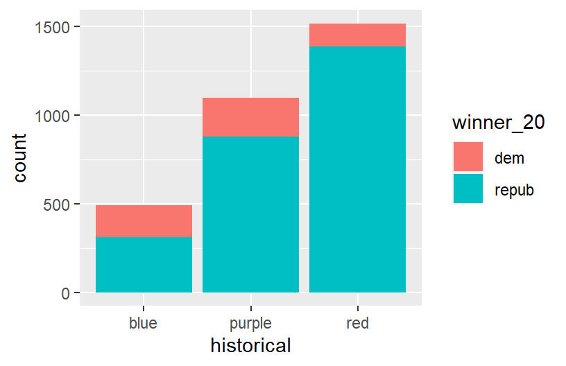
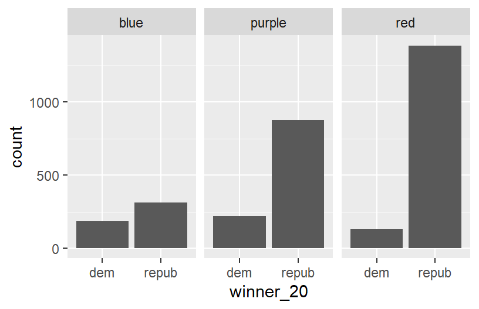
# A side-by-side bar plot
# Note the new argument to geom_bar
ggplot(elections, aes(x = historical, fill = winner_20)) +
geom_bar(position = "dodge")
# A proportional bar plot
# Note the new argument to geom_bar
ggplot(elections, aes(x = historical, fill = winner_20)) +
geom_bar(position = "fill")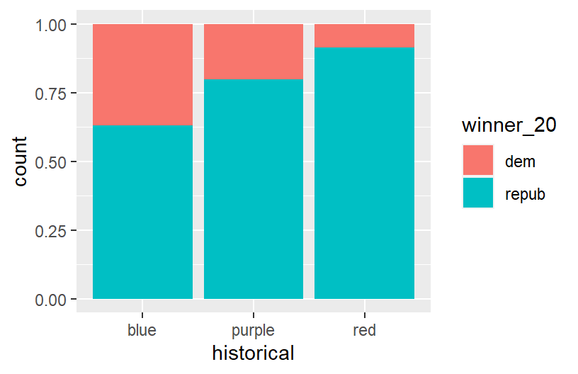
pro = easier to compare the relative outcomes in blue vs purple vs red states con = lose track of how many counties fall into blue vs purple vs red states
weather <- read.csv("https://mac-stat.github.io/data/weather_3_locations.csv")
# How do 3pm temperatures (temp3pm) differ by location?
ggplot(weather, aes(x = temp3pm, fill = location)) +
geom_density(alpha = 0.5)

# How might we predict the 3pm temperature (temp3pm) by the 9am temperature (temp9am)?
ggplot(weather, aes(y = temp3pm, x = temp9am)) +
geom_point()
# How do the number of rainy days (raintoday) differ by location?
ggplot(weather, aes(x = location, fill = raintoday)) +
geom_bar()
# Install ggridges package
library(ggridges)
# Make our first joy plot
# THINK: What DON'T you like about this?
ggplot(elections, aes(x = repub_pct_20, y = state_abbr)) +
geom_density_ridges()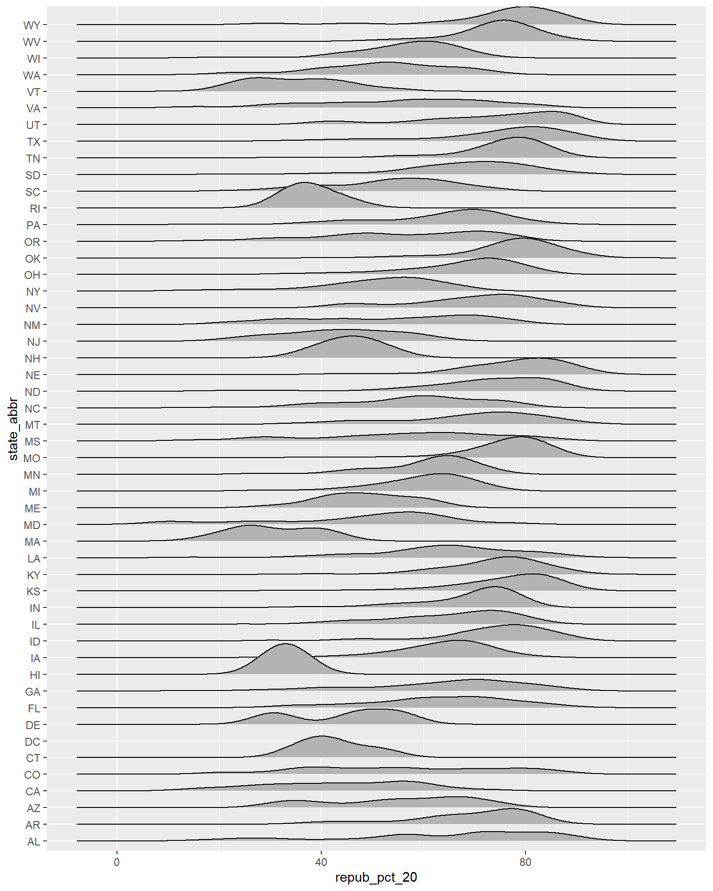
# Let's put the states in order by Republican support, not alphabet
# How do you think fct_reorder works? We'll learn about this later in the semester.
ggplot(elections, aes(x = repub_pct_20, y = fct_reorder(state_abbr, repub_pct_20))) +
geom_density_ridges(alpha = 0.5)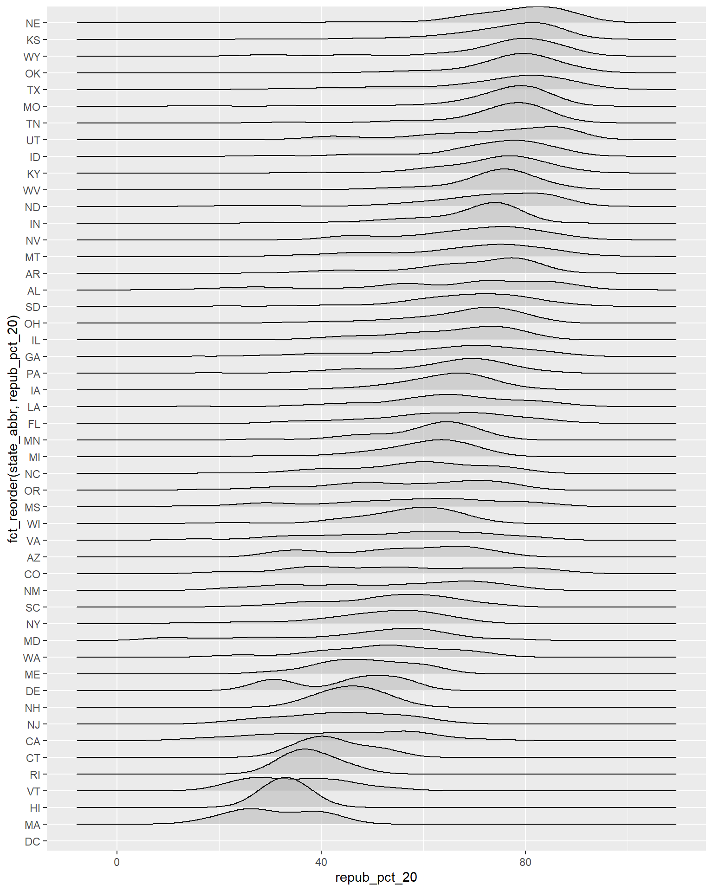
# YOUR TURN: color/fill the ridges according to a state's historical voting patterns
# and add meaningful axis labels
ggplot(elections, aes(x = repub_pct_20, y = fct_reorder(state_abbr, repub_pct_20), fill = historical)) +
geom_density_ridges(alpha = 0.5) +
labs(y = "state", x = "2020 Republican support (%)") +
scale_fill_manual(values = c("blue", "purple", "red"))
elections_by_state <- read.csv("https://mac-stat.github.io/data/election_2020_by_state.csv")
ggplot(elections_by_state, aes(y = repub_pct_20, x = repub_pct_16)) +
geom_point()
# YOU TRY
# Start by creating a "scatterplot" of state_abbr (y-axis) by 2020 Republican support on the x-axis
# Color the points red
ggplot(elections_by_state, aes(x = repub_pct_20, y = state_abbr)) +
geom_point(color = "red")
# YOU TRY
# Reorder the states in terms of their 2020 Republican support (not alphabet)
ggplot(elections_by_state, aes(x = repub_pct_20, y = fct_reorder(state_abbr, repub_pct_20))) +
geom_point(color = "red")
# Finally, add ANOTHER layer of points for the 2016 outcomes
# What info does this new geom_point() layer need to run?
ggplot(elections_by_state, aes(x = repub_pct_20, y = fct_reorder(state_abbr, repub_pct_20))) +
geom_point(color = "red") +
geom_point(aes(x = repub_pct_16, y = state_abbr))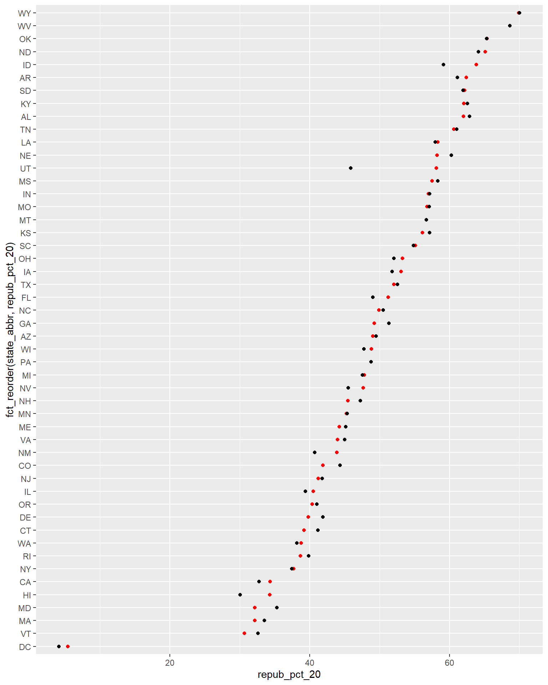


.png){kind=link}